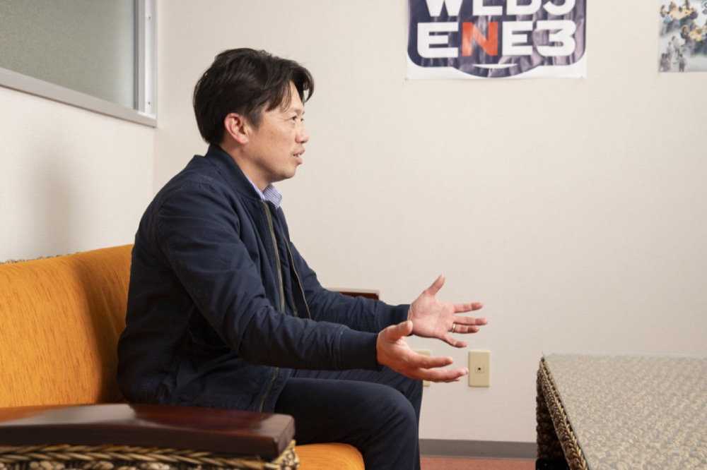
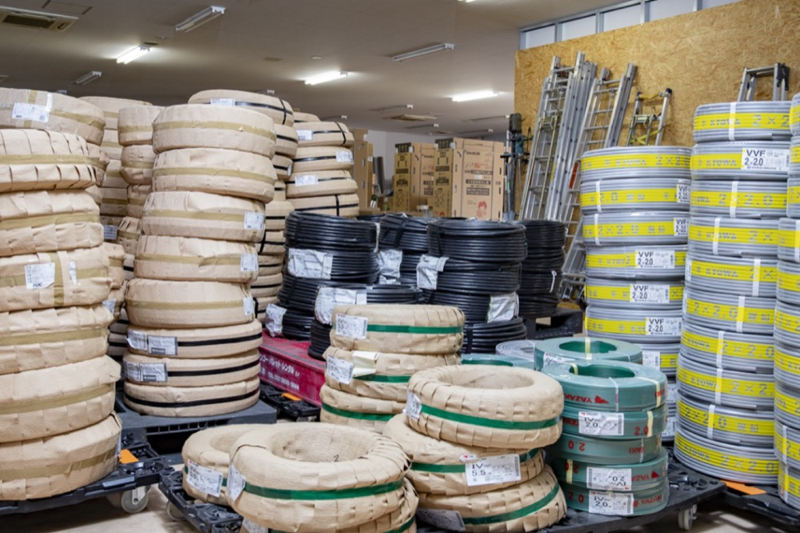
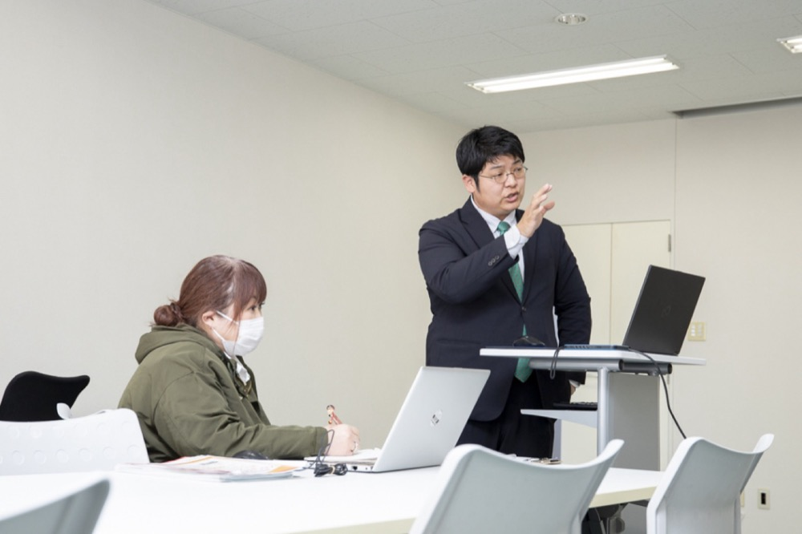
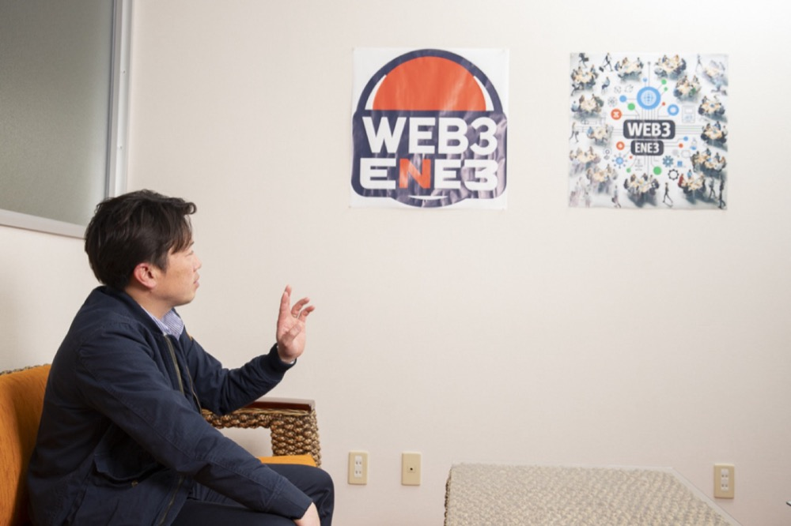

再生可能エネルギー普及を目指す風雲児！
布留川 剛仁Takehito Furukawa
アイコミュニケーションズ株式会社 代表取締役
商業高校卒業後、東京電力ホールディングス株式会社に入社。2010年、アイコミュニケーションズ株式会社専務取締役に就任。2021年、同社代表取締役に就任。現在に至る。
企業サイトを見るTRACK 01
再生可能エネルギー普及を目指す風雲児！
千葉市稲毛区にあるアイコミュニケーションズ株式会社は、2006年に設立された会社だ。「再生可能エネルギーの普及」に向け、太陽光や蓄電池、そしてEVなどの大容量バッテリーから家庭電力として給電するシステム：V2Hといったさまざまな商品・サービスの営業および設計、施工、保守を行っている。
TRACK 02
電力の“当たり前”の概念を破壊する存在との出会い


アイコミュニケーションズ株式会社は、当初はその名の通り通信・OA機器やPCネットワーク構築などの通信系の専門会社として2006年に設立されたのがはじまりだ。現在の主力事業の一つとなるエコキュートの施工請負事業を開始したのは2010年、布留川代表がアイコミュニケーションズ株式会社に取締役として入社し新規事業として立ち上げる。
元々は東京電力で12年もの間、電力マンとして働いていた布留川代表。巨大な組織の中でやってきた仕事は、基本的に「マイナスを0にする仕事」だったと語る。電力がなければ経済は停止するため、絶対に止めてはならない。電力が当然に供給される状態、つまり「0の状態」を維持することが求められていた布留川代表は日々奮闘していた。
2010年ごろから、太陽光などの再生可能エネルギーの存在と投資の必要性を感じていたという布留川代表。しかし、大きな組織において攻めの仕事をしていくことの難しさも同時に感じた。そこで、下方硬直的な電力マーケットでのベンチャー企業的な動きを活発化させていく必要性を見出すことになるが、リスクは一切感じなかったという。それは蓄電池という存在を知っていたからだ。


TRACK 03
「電気工事会社」であることの強み
現在アイコミュニケーションズ株式会社は電気工事業を中心に、太陽光発電、蓄電池、V2Hなどを主力商品として住宅設備の販売や保守。直近では大企業とタッグを組み、なんとブロックチェーン関連技術の利用による系統マイニング事業を計画中、日本の電力インフラに根幹から携わっていくという。
そんなアイコミュニケーションズ株式会社の最大の強みは「電気工事会社であること」にほかならないと布留川代表は語る。かつて電気工事業は「３Ｋ（きつい、汚い、危険）」とされ、就職先として避けられていた業界だった。しかし最近の人工知能の発展により知的労働が削減されている現状を鑑みると、電気工事業がもたらす「リアルな仕事の価値」が明確になる。つまり単に「ブルーカラーとして稼ぐ」というだけではなく、実際に目の前で成果を見ることができる仕事を通じて、論理的思考、チームマネジメント、マーケティング、財務といったスキルを日々学べる環境が整っているという。
また、この業界は社会の課題を解決し、未来を形作る強みを持っている。日々の業務を通じて、時に逆境に遭遇することもあるが、そのような状況を乗り越えることで人は成長し、進化する。脳に刺激を与え五感を働かせることで、人々を進化させていくことこそが、電気工事業の最大の強みであり、優位性であると考えていると布留川代表は語る。
TRACK 04
事業が成功する秘訣は「思考の順番」
私自身は弱い人間です、とつぶやく布留川代表。入社当時は再生可能エネルギーに熱意を持って挑戦したが、現実は厳しく、苦労する日々だったという。その中で「信用」と「継続は力なり」という原則の重要性を学んだ代表は、当初数千万円だった年商をいかにして1億円超えに導くか試行錯誤の末、「ヒト⇒モノ⇒カネ」という思考の順番に基づく商品開発とマーケティングを進めることが成功への鍵だと気付いた。
「たとえば、スタッフがノンストレスで働ける環境を作ることが現場の作業をスムーズにし、良い結果をもたらし、リピート顧客を獲得します。関わる全ての人が喜ぶ商品を提供することで自然と売り上げや評判が上がるということを経験してきました。お客様に対しても同様で「お客様が必要と感じている商品である、太陽光や蓄電池やV2Hは高価でちょっと不安、だからリーズナブルで安心して購入できるようにする」私たちはまだ完璧な成果を出してはいませんが、事業が成功するために最も重要なことは「ヒト⇒モノ⇒カネ」の思考の順序を大切にすることだと確信しています。」と布留川代表は語る。